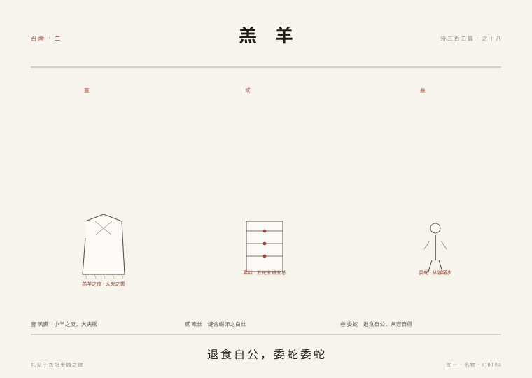
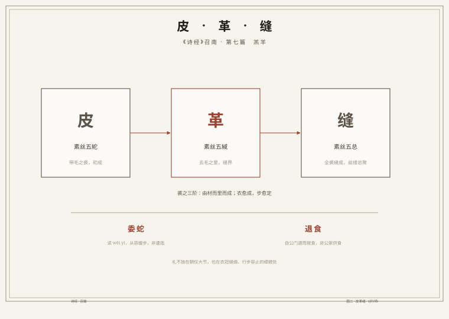

第十八篇 羔羊
召南 · 之二 SJ018
朗读 · 普通话
依经文正文朗读，句读从文；不配乐、不改速、不加拖腔。全库同一音色（豆包 TTS），非播音员录制。
一 解题
诗三判：
- 谁在说：一个看大夫退朝的人。他只看两件事：身上的裘，走路的姿态。
- 说什么事：羔羊之皮、革、缝，以素丝五紽、五緎、五总缝合；大夫退食自公，委蛇委蛇，从容自得。
- 为何编在此：召南写「已成之后靠什么维持」，此篇维持的是「礼」——礼不独在朝仪大节，也在衣冠缝缀、行步容止的细微处。一篇写大夫之节度。
《毛序》：「《羔羊》，《鹊巢》之功致也。召南之国，化文王之政，在位皆节俭正直，德如羔羊也。」——系于《鹊巢》之化，以羔羊比德。
朱子《诗集传》：「《诗》人美其大夫之为人……退食自公，委蛇委蛇，言其从容自得之貌。」——朱子落在「从容自得」的容止上，不铺陈德目。
本库的看法：这首诗的骨在「退食自公、委蛇自得，礼见于服饰之微」。
全篇不写政绩，只写一件裘、几处缝、走路的姿态；节度是从衣冠步履里透出来的，不在自夸的话里。
二 经文
第一章
羔羊之皮，素絲五紽。退食自公，委蛇委蛇。
第二章
羔羊之革，素絲五緎。委蛇委蛇，自公退食。
第三章
羔羊之縫，素絲五總。委蛇委蛇，退食自公。
分章：毛传、朱子皆三章，章四句。三章只换六字：皮／革／缝，紽／緎／总；「退食自公」与「委蛇委蛇」二章互换位置。前半写裘，后半写容；复沓之中，衣与步两相依。
三 韵读
| 一 |
皮、紽、蛇 |
歌部 |
| 二 |
革、緎、食 |
职部 |
| 三 |
縫、總 |
东部 |
首章歌部舒缓，次章职部短促，三章东部收圆。末章「总」字合束全篇：丝缕总聚，裘成而容定。
四 字义名物
- 羔羊——小羊。其皮为裘，大夫之服。
- 皮——带毛之羔皮。
- 素絲——白丝，缝裘缀饰所用之线。
- 五紽（tuó）——皮革缝合之数；紽，丝缕结合之处。不是量词「五团」。
- 退食自公——自公门退下，而就食（退朝归家食）。一说退食为减膳。不是「从公家吃饭回来」。
- 委蛇（wēi
yí）——从容自得、缓步委曲之貌。不是「逶迤」之地形，亦非蛇名。
- 革——去毛之皮，裘里；与「皮」对举，同裘而异称。
- 五緎（yù）——缝合之迹；緎，缝界。
- 縫——缝合成的裘。
- 五總（zǒng）——丝缕总聚之处；总，合束。
五 今译
第一章
羔羊皮裘，白丝缝了五处结合之处。从公门退下就食，缓步从容，缓步从容。
第二章
羔皮之革，白丝缝了五道缝界。缓步从容，缓步从容，从公门退下就食。
第三章
缝成的羔裘，白丝总聚五处。缓步从容，缓步从容，从公门退下就食。
译注：「紽、緎、总」皆缝合并缀之名，今译以「结合处／缝界／总聚处」别之，不坐实为确数五根线。「委蛇」译「缓步从容」，读
wēi yí。「退食自公」译「自公门退下就食」，不作公家供食解。
六 章旨
一章：皮。初成之裘，素丝为紽；退食而从容。
二章：革。裘之表里，素丝为緎；从容而退食。
三章：缝。全裘缝成，素丝为总；从容如故。
三章合起来：裘之三阶是皮→革→缝（由材而里而成），容之三阶只一个「委蛇」反复。
衣愈成，步愈定；礼之节度，在细处。
七 诗教
- 赋：直陈大夫之服与其退食之容，不设比喻，是赋。
- 观：可观一「节」。服饰有制，行步有度；从容不是懒散，是守节之闲。
- 群：一大夫之容，可观一国之化；在位者皆有节度，是群风所系。
- 怨：无怨。全篇无讥刺、无夸誉，只平平写出一种仪态。
八 分寸与边界
- 不可把「委蛇」读作逶迤（道路曲折）或蛇类。此是从容缓步之貌，读
wēi yí。
- 不可把「退食自公」解作从公家领饭食。公是公门；退食是退朝而就食，自公门出。
- 不可把「五紽、五緎、五总」坐实为五根线、五处缝。五是虚数表缝缀之繁，三字皆缝合之名，非三种器物。
- 不可把此篇读成大夫俭朴的道德颂。《毛序》「节俭正直、德如羔羊」是汉儒比附；诗里只有裘、丝、从容的步子。
- 不可把「革」解为变革。革是去毛之皮，与皮同为裘材。
九 存疑
- 说者与美刺：《毛序》以为美在位者之化，朱子以为美大夫之从容；一说此诗讥大夫退食自逸。本库取美从容，不主讥刺。
- 紽、緎、总之训：毛传各标「数也、缝也、总也」，郑笺申之；近代或谓皆缝合缀饰之异名，不必分深浅。本库取缝合并缀之义。
- 「退食」之义：一说退朝归家食，一说退食即减膳（损膳自节俭）。本库从前说，与「自公」相贯。
- 羔羊比德：《序》以羔羊「革其母」?
比俭正直；此为汉人取象，诗本文不见德目。本库存录，不入正文判断。
- 编次之疑：此篇与《鹊巢》《采蘋》同卷，皆写大夫公室之事；一说本为卿大夫退朝之乐，编次召南。本库存录。
十 跨典
- 《郑风·羔裘》「羔裘如濡，洵直且侯」——同咏羔裘之服；彼以裘比君子之直，此以裘见大夫之节。
- 《礼记·玉藻》「君子……裘裘，纁裹緍冠」——古服有制，裘之表里缝缀皆有礼；素丝五缝即其细目。
- 《论语·乡党》「入公门，鞠躬如也……不宿肉，退必告」——大夫在公与退食之容止，可与此篇「委蛇」对看。
- 《召南·采蘩》「夙夜在公」——同卷公事之篇；彼写奉事之勤，此写退朝之节。
- 《唐风·羔羊》无；可比《小雅·都人士》「彼都人士，狐裘黄黄」，衣冠步履之咏。
十一 双卡与图
双卡五对：
| 皮（带毛之裘） |
革（去毛之里） |
| 紽（结合处） |
緎（缝界） |
| 总（丝缕总聚） |
五根线（坐实数，误） |
| 委蛇（从容缓步） |
逶迤·蛇（误训） |
| 退食自公（退朝就食） |
公家供食（误训） |

图一 · 羔裘·素丝·委蛇 名物图

图二 · 皮 · 革 · 缝 义理图
读图三处：
- 裘是整幅，不取羊只：全篇写衣不写羊；左格画一件轮廓完整的羔裘，不画羊身。
- 素丝在缝线处：中二格画裘上几道缝合线与丝缕小结；紽、緎、总都是缝上的事，不是衣上的花纹。
- 委蛇是步子，不是姿态名词：右格画一个缓步背影，衣摆动而步从容；「委蛇」落在行步上，不放在脸上。